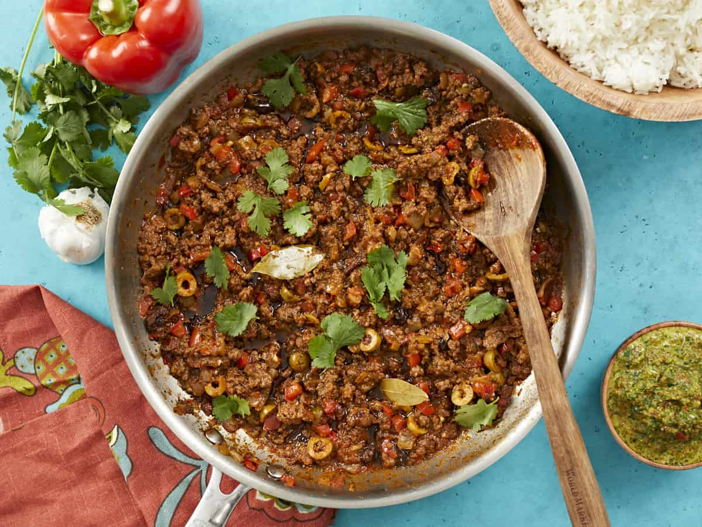

<!DOCTYPE html>
<html lang="en">
<head>
    <meta charset="UTF-8">
    <meta name="viewport" content="width=device-width, initial-scale=1.0">
    <title>Document</title>
</head>
<body>
    
</body>
</html>


<!DOCTYPE html>
<html lang="en">
<head>
    <meta charset="UTF-8">
    <meta name="viewport" content="width=device-width, initial-scale=1.0">
    <title>Picadillo Recipe</title>
</head>

<body>
    <h1>Recipe #1: Picadillo</h1>

    <p><a href="../index.html">Home Page</a></p>

    
    <p>Picadillo is one of my favorite dishes from the Puerto Rican tradition of culinary delights. The name originates from the Spanish word "Picar", or to mince. I typically use leftover taco meat to make this, but if you want to create a superb picadillo from scratch, <em>this</em> is how you do it!</p>

</body>
</html>
